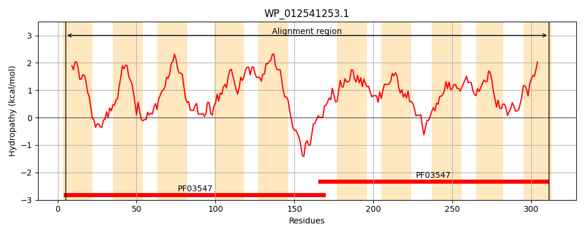
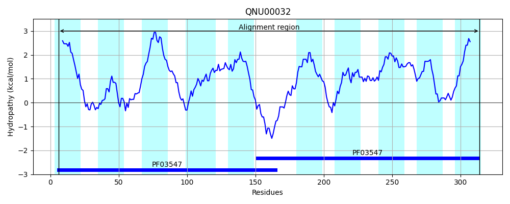
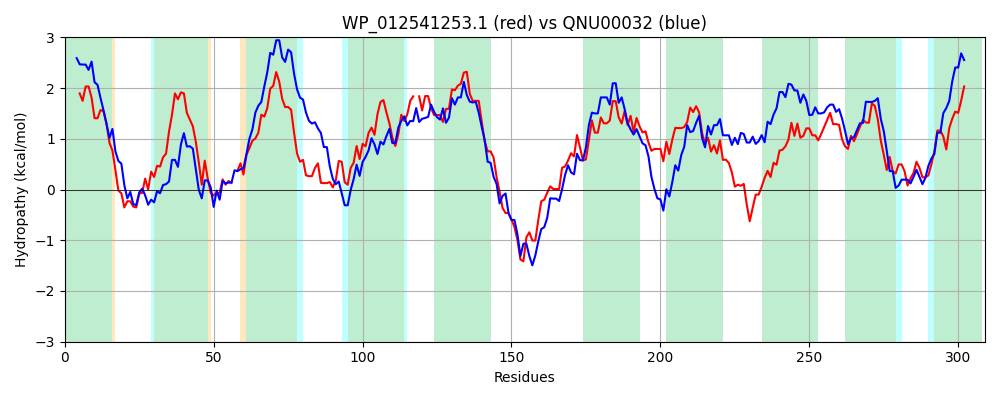

Hit Accession: QNU00032
Hit TCID: 2.A.69.3.7
Hit Description: gnl|BL_ORD_ID|19716 gnl|TC-DB|QNU00032.1|2.A.69.3.7 AEC family transporter [Bacillus licheniformis]
Mach Len: 309
e:0.000000
Query TMS Count : 10
Hit TMS Count: 10
TMS-Overlap Score: 9.100000
Predicted Substrates:CHEBI:5905;indole-3-acetic acid, CHEBI:22676;auxin
BLAST Alignment:
Score: 369 , Bit scores: 146 bits, E-value: 9.2e-42, Alignment length: 309, Percentage identity: 27
Query: 5 LLQSLFPLVFIMLLGWLSGKLGYTRREDASVLATVVIRFALPFHLFIGALNTHPDKI-KNFTFMAVLVIGLMGSYFLTLLISRYVFRHDIKTSAIQSLVCAFPDMAYFGAPVLAVLIG-PEGFLGVLIGNLVTSVLMIPLTIILIRMGDKHRSADEPQLHAGQLILQNLLKAVRNPIVWIPISGVLLSLAGVQLPPMLSMPIEMVGKIAGGLSLFALGLLFYGERPTVNIQTCTNISIKNLIQPAMMALAGLAFGLSHTLMQQVIIIGATPSAIAAGMFALRSDTYIEPASSSILLGTAIGVVTEGIMI 311
+L L P+ F++ LGW +G G + A ++T+V ++ALP H L+T DK M LVIG++G Y + LL+ R++F++D+ +++ SL A P A+ G PVL L G E + + I +V + ++ PL II+ +G + E ++ +++L + P+ + P++ ++L L G+Q+P + ++M+G G++LFA+G+ + ++ + +K QPA+M + + GLS M + +++ A P + A M A ++ +S+ ++ + +++ I+I
Sbjct: 6 ILILLAPIFFVIALGWFAGHFGSYDAKSAKGVSTLVTKYALPAHFVSSILSTPKDKFYSQIPLMISLVIGIVGFYVIILLLLRFLFKYDLTDASMFSLNSAQPTFAFMGIPVLGSLFGMQEVAIPIAITGIVVNAMLDPLAIIVGTVGRSSKKQTETTDSIWKVTGKSILHGLSEPLAFAPLASIILVLFGLQIPELPQKMLDMLGDTTSGIALFAVGVTVGIRKIKFSMPALSIALLKVAAQPALMFVIAMVVGLSSADMTKAVLLVAFPGSAVAAMIATNFESQEAETASAFVISAVLSIISLPILI 314 | Protein Hydropathy Plots: |
|---|
|  |  |
Pairwise Alignment-Hydropathy Plot:
|
|---|
|  |